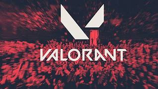

VALORANT | Campeã mundial, LOUD foi a segunda equipe que mais faturou em 2022

A organização brasileiro foi a grande campeã mundial na modalidade e garantiu a segunda colocação como equipe que mais faturou ao longo do ano de 2022
Colocando o cenário brasileiro no topo do mundo, a LOUD chegou ao VALORANT em 2022 e já é uma das organizações que mais lucrou da modalidade. Participando de todos os torneios internacionais neste ano, a organização verde-amarela garantiu a participação como segunda colocada no ranking de equipes que mais faturaram com campeonatos em 2022.
No total, ao longo do ano a equipe brasileira garantiu o pote de U$ 470,387 mil com suas participações nos principais campeonatos nacionais e internacionais. Na cotação atual, o valor chega a mais de R$ 2.4 milhões na cotação atual - os dados são do portal Liquipedia. Começando sua caminhada pelos torneios nacionais, o coletivo foi campeão de ambas as etapas do VALORANT Challengers brasileiro.
Levantando o troféu invicta nas duas, as etapas da liga nacional garantiram à equipe o valor de R$ 100 mil cada. Em sua primeira participação internacional do ano, no VALORANT Masters Reykjavík 2022, ela terminou em segundo lugar e faturou U$ 120 mil (R$ 632 mil na cotação atual).
Na segunda edição do Masters, realizada na capital dinamarquesa Copenhage, o time teve seu pior resultado do ano e foi eliminada em 11º-12º lugar, levando o valor de U$ 10 mil para casa - pouco mais de R$ 52 mil. Por fim, o título de campeã mundial no VALORANT Champions 2022 foi o ápice da LOUD e garantiu ao sexteto brasileiro U$ 300 mil, que dá mais de R$ 1.5 milhões.